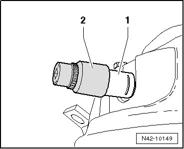

Residual Pressure Retaining Valve
Residual Pressure Retaining Valve
Special tools, testers and auxiliary items required
• Ring spanner insert AF 21 (T10158/1)
• Residual pressure retaining valve must only be replaced if it was damaged during removal and installation or servicing of air spring damper or if air is not released from it anymore (it sticks).
• With air spring damper removed, no additional preparation is needed for replacing the residual pressure retaining valve.
CAUTION!
• If residual pressure retaining valve sticks, the vehicle must be on a hoist and the wheels must rotate freely in order to replace the valve.
• When removing air line, there is the possibility that the residual pressure retaining valve will also be removed.
• If vehicle is not raised with a hoist, vehicle sinks immediately on side where residual pressure retaining valve was removed. There is a strong risk of injury because the arms are clamped.
• Vehicle must remain on hoist until a new residual pressure retaining valve is installed and air spring damper is refilled.
Removing
This procedure applies to replacement of residual pressure retaining valve with air spring damper installed.
- Position vehicle on hoist and raise until wheels rotate freely.
- Remove wheel housing liner.
- Remove residual pressure retaining valve from air line.
- Remove residual pressure retaining valve - 1 - from air spring damper using socket (T10158/1)- 2 -.

Installing
Installation is performed in the reverse order of removal.
- Fill air spring damper via vehicle diagnosis, measuring and information system (VAS 5051).
Tightening Specifications